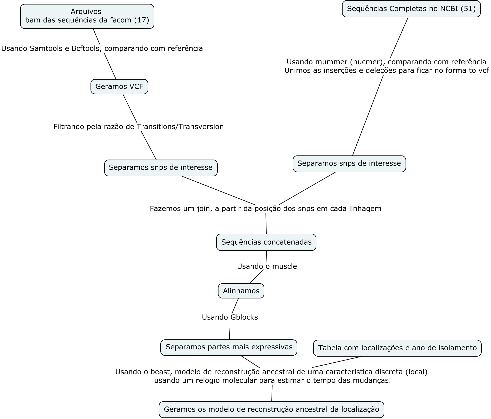

Reunião 11/03/2016
Página web
Modelo de filogeografia
Sequências:
Por exemplo:
GCA_000749625.1_ASM74962v1 (Ja é uma sequência da facom)
No arquivo .gbff tem:
/country="Brazil: Paran, Palmeiras"
/collection_date="2008"
Que é a informação que precisamos.
Mas a maioria das sequências tem tags diferentes.
GCA_001287425.1_bcg_Tokyo
source 1..4322672
/organism="Mycobacterium bovis BCG"
/mol_type="genomic DNA"
/strain="Japan"
/db_xref="taxon:33892"
Acho que não da para automatizar como conseguir as localizações e ano de coleta. Esse mesmo não tem paper publicado para consultar,
mas muitos tem.
O que estamos fazendo de forma resumida agora.
